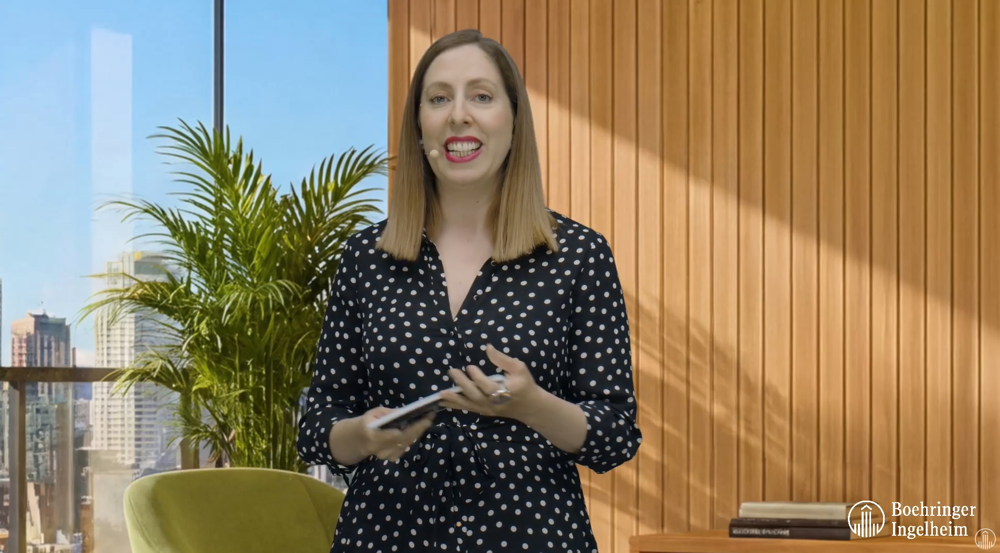
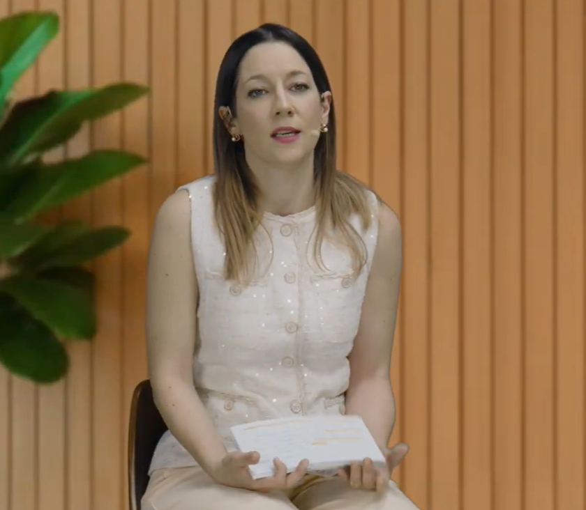
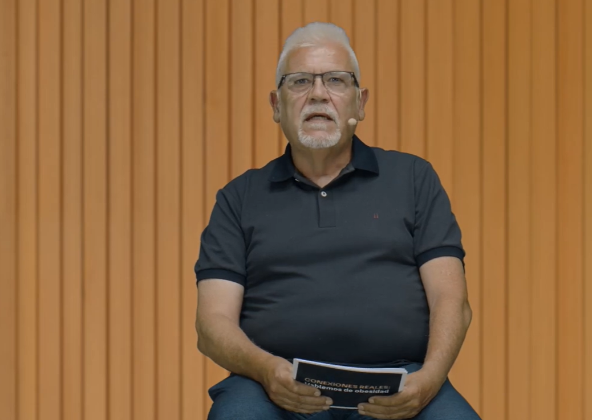

94 %5
Falta de energía
Cuando una persona tiene obesidad, las actividades diarias requieren mayor esfuerzo. Llegan a tener una probabilidad de fatiga un 94 % mayor que las personas con peso normativo.
En colaboración con Boehringer Ingelheim
Una conversación para entender la obesidad como lo que es, una enfermedad, y aprender a mirar más allá del peso
Descubre más sobre la obesidad ↓01 · Cuatro voces
Medicina y experiencia, en la misma mesa.
Boehringer Ingelheim reunió en un webinar, el pasado 10 de junio, a expertos que conocen en profundidad la obesidad y que cada día reciben en sus consultas a personas que la padecen. La endocrinóloga Ana Sánchez Bao habló con dos representantes de pacientes: Federico Luis Moya preside la Asociación Nacional de Personas que Viven con Obesidad (ANPO). Josep Maria Martínez viene de la Federación Española del Hígado. Moderó la conversación Deborah García Bello, investigadora y divulgadora científica.1

Descubre las voces del encuentro ↓

“Una enfermedad compleja que afecta al organismo y no solo una cuestión estética”
Deborah García Bello, minuto 6:37
Ver este fragmento en YouTube02 · Más que un número
El índice de masa corporal (IMC) orienta, pero un número no lo cuenta todo2,3,4. Para entender la obesidad, hay que mirar también cómo es su cuerpo, qué problemas de salud tiene, su historia y sus circunstancias. Todo este contexto influye en su calidad de vida, su vitalidad y su bienestar diario2,3,4.
Cómo se vive
La obesidad va mucho más allá de la salud física2,3,4. También puede dificultar el día a día de las personas. El sobrepeso impacta en la calidad de vida de los pacientes, en su descanso e, incluso, en su bienestar emocional y en la movilidad2,3,4.
94 %5
Cuando una persona tiene obesidad, las actividades diarias requieren mayor esfuerzo. Llegan a tener una probabilidad de fatiga un 94 % mayor que las personas con peso normativo.
×4-56
Subir escaleras o ducharse puede ser un desafío. Con obesidad y poca actividad física, el riesgo de movilidad limitada es de 4 a 5 veces mayor.
19-42 %7
Entre el 19 % y el 42 % de los adultos con obesidad experimentan discriminación por su peso. Esta perjudica su bienestar emocional y autoestima.
29,7 %8
La obesidad también se nota en la vida personal y laboral. De media, limita un 29,7 % de las actividades diarias y un 18,8 % de la productividad en el trabajo.
70 %9
Dormir bien es salud. Aproximadamente 7 de cada 10 personas con obesidad presentaban algún grado de apnea del sueño y problemas de descanso.
“Mi chip o mi interruptor cambió... porque yo ya era incapaz”
Federico Luis Moya, ANPO, minuto 22:18 · cuando ya no podía atarse los zapatos
Ver este fragmento en YouTube“Sacar la etiqueta de “obeso” y darnos cuenta de que primero va la persona”
Dra. Ana Sánchez Bao, minuto 16:17
Ver este fragmento en YouTube03 · Qué es la obesidad
La obesidad es una enfermedad crónica, no una falta de fuerza de voluntad. En ella influyen la biología, el entorno y la vida de cada uno. Y cada vez afecta a más gente: en 2035 podría llegar al 37 % de la población española.1,2,3
Hay personas que heredan más facilidad para acumular grasa. Según los estudios, la genética explica entre el 40 % y el 70 % de las diferencias de peso entre unas personas y otras.10
Las hormonas regulan cómo el cuerpo usa y guarda la energía. Y la relación va en los dos sentidos: la obesidad, a su vez, favorece la resistencia a la insulina.1,3
El cerebro, sobre todo el hipotálamo, marca cuándo tenemos hambre y cuándo estamos saciados. Lo hace con las señales que le llegan del cuerpo.2,3
No encontrar espacios para poder moverse o comer bien también influye en el peso. No todo depende de cada persona: el entorno pesa sobre toda la población.3
La ansiedad y el estrés cambian la forma de comer. En muchas personas, esa carga emocional acaba traduciéndose en hábitos menos saludables.3
Lo que has estudiado, tu poder adquisitivo o cómo vives también influye en la probabilidad de tener obesidad.3
“Hay mucho estigma y frustración en tantos intentos de pérdida de peso”
Dra. Ana Sánchez Bao, minuto 15:56
Ver este fragmento en YouTube04 · Vivir con obesidad
Que te juzguen por tu cuerpo también hace daño. El estigma genera culpa, vergüenza y miedo, y muchas personas acaban retrasando el momento de pedir ayuda. Escucharlas sin prejuicios es el primer paso.2,3
“Hay que cambiarlo, es una barrera que crea estigma”
Federico Luis Moya, ANPO, minuto 33:33
Ver este fragmento en YouTube“Tienes la sensación de que no te acaban de entender”
Josep Maria Martínez, Federación Española del Hígado, minuto 13:05
Ver este fragmento en YouTubeEl miedo a que te juzguen hace que muchas personas aplacen la visita al médico. Y cuando todo se achaca al peso, otros síntomas pasan desapercibidos y el diagnóstico llega tarde.3
Sentirse juzgado, no encontrar profesionales que conozcan bien la obesidad o que falten recursos. Todo eso aleja a muchas personas de la atención que necesitan.3
05 · Todo el cuerpo
Más allá de la pérdida de peso.
Entender cómo afecta el sobrepeso al cuerpo es vital para la salud.
La obesidad no se queda en la báscula. Aumenta el riesgo de problemas de corazón y de riñón. Y favorece que se acumule grasa en el hígado, que con el tiempo puede derivar en enfermedades graves.1,3,11
“Hay más de 200 complicaciones reconocidas asociadas a la obesidad”
Dra. Ana Sánchez Bao, minuto 17:37
Ver este fragmento en YouTube06 · Qué debe cambiar
Reconocer la obesidad como enfermedad pasa por diagnosticarla mejor, investigar más y tratarla de forma completa. Pero la conversación dejó claro que cambiar la mirada nos toca a todos: fiarnos de la ciencia, escuchar con empatía, tratar a cada persona con dignidad y entender que la responsabilidad es compartida.1,2
Mirar más allá del peso es dar humanidad a esta enfermedad crónica.
“Es uno de los grandes desafíos de salud de nuestra sociedad”
Deborah García Bello, minuto 1:12
Ver este fragmento en YouTube[1] Boehringer Ingelheim. Conexiones Reales | Hablemos de obesidad. Encuentro del 10 de junio de 2026. Vídeo y materiales facilitados por el cliente.
Consultar fuente →[9] Esmaeili N et al. The relationship between obesity and obstructive sleep apnea in four community-based cohorts: an individual participant data meta-analysis of 12,860 adults. EClinicalMedicine. 2025;83:103221.
Consultar fuente →[2] Bowman-Busato J, et al. Providing a common language for obesity: the EASO obesity taxonomy. Int J Obes. 2025;49:182-91.
Consultar fuente →[10] Loos RJF, Yeo GSH. The genetics of obesity: from discovery to biology. Nat Rev Genet. 2022;23:120-33.
Consultar fuente →[3] Lecube A, et al. Guía Española GIRO: manejo integral y multidisciplinar de la obesidad en personas adultas. SEEDO y sociedades colaboradoras; 2024.
Consultar fuente →[11] Said S et al. The link between chronic kidney disease and cardiovascular disease. J Nephropathol. 2014.
Consultar fuente →[4] Batsis JA, et al. Diagnostic accuracy of body mass index to identify obesity in older adults: NHANES 1999-2004. Int J Obes. 2016;40:761-7.
Consultar fuente →[12] Simancas-Racines D et al. Nutritional strategies for battling obesity-linked liver disease: the role of medical nutritional therapy in MASLD management. Curr Obes Rep. 2025;14:7.
Consultar fuente →[5] Martinez-Amezcua P et al. The association between adiposity and perceived physical fatigability in mid-to-late life. Obesity (Silver Spring). 2019;27:1177.
Consultar fuente →[13] Rinella ME et al. AASLD Practice Guidance on the clinical assessment and management of nonalcoholic fatty liver disease. Hepatology. 2023;77:1797-835.
Consultar fuente →[6] DiPietro L et al. The joint associations of weight status and physical activity with mobility disability: the NIH-AARP Diet and Health Study. Int J Obes. 2019;43:1830.
Consultar fuente →[14] Müller TD et al. Anti-obesity drug discovery: advances and challenges. Nat Rev Drug Discov. 2022 Mar;21(3):201-223. doi: 10.1038/s41573-021-00337-8.
Consultar fuente →[7] Rubino F et al. Joint international consensus statement for ending stigma of obesity. Nat Med. 2020;26:485-97.
Consultar fuente →[15] Younossi ZM et al. Global epidemiology of nonalcoholic fatty liver disease-Meta-analytic assessment of prevalence, incidence, and outcomes. Hepatology. 2016 Jul;64(1):73-84. doi: 10.1002/hep.28431.
Consultar fuente →[8] Rodríguez-Carnero G et al. The real-world impact of obesity on quality of life and work productivity in Spain: a cross-sectional observational study involving physicians and individuals with obesity. Cureus. 2026;18:e105867.
Consultar fuente →[16] Hamid O et al. The epidemiology of non-alcoholic steatohepatitis (NASH) in the United States between 2010-2020: a population-based study. Ann Hepatol. 2022 Sep-Oct;27(5):100727. doi: 10.1016/j.aohep.2022.100727.
Consultar fuente →Coordinación: Andrea Valladolid | Diseño y maquetación: Alejandra Santander | Redacción: Àngela Zorrilla | Vídeo: Boehringer Ingelheim / fotogramas del webinar | Ilustración: “Human body organs engraved illustrations set" por pch.vector disponible en Freepik.
Un proyecto de Brandslab. Godó Nexus.